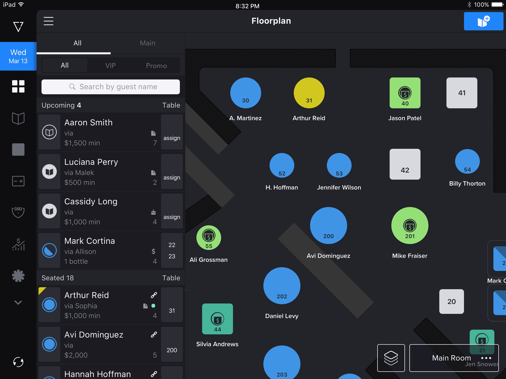
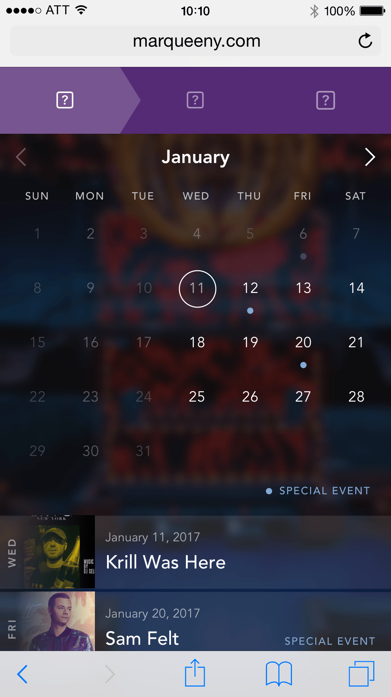
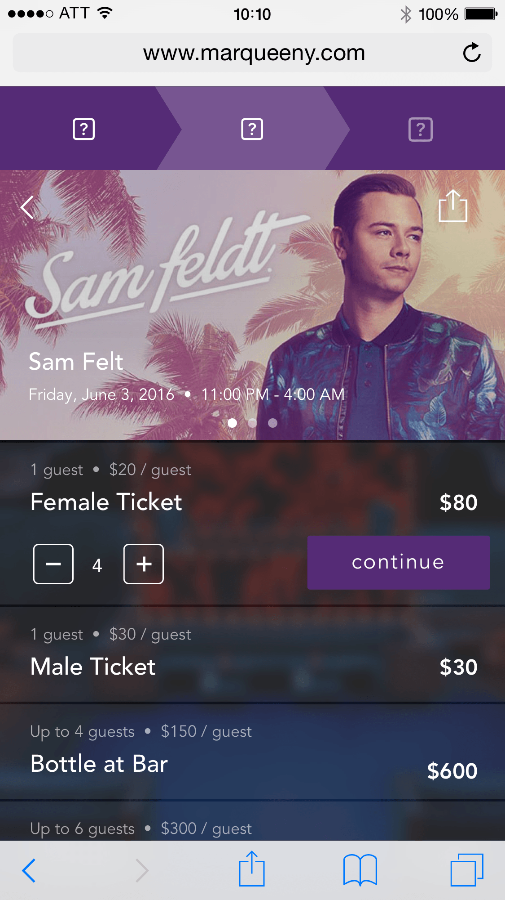
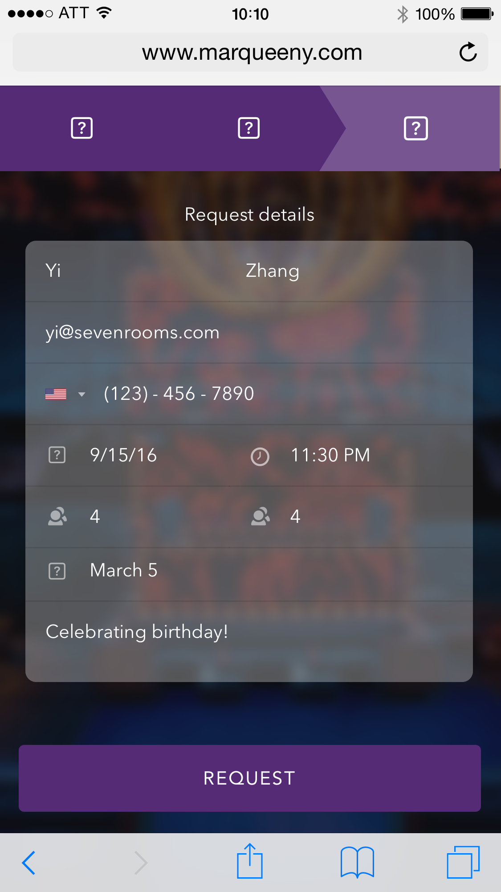
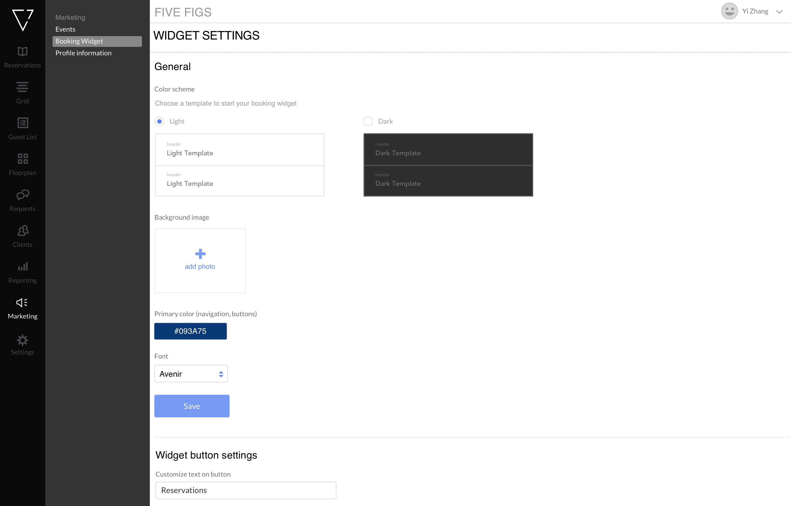
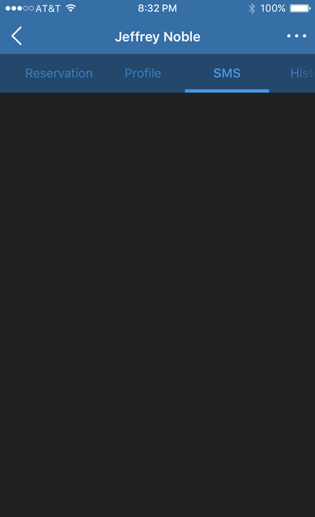
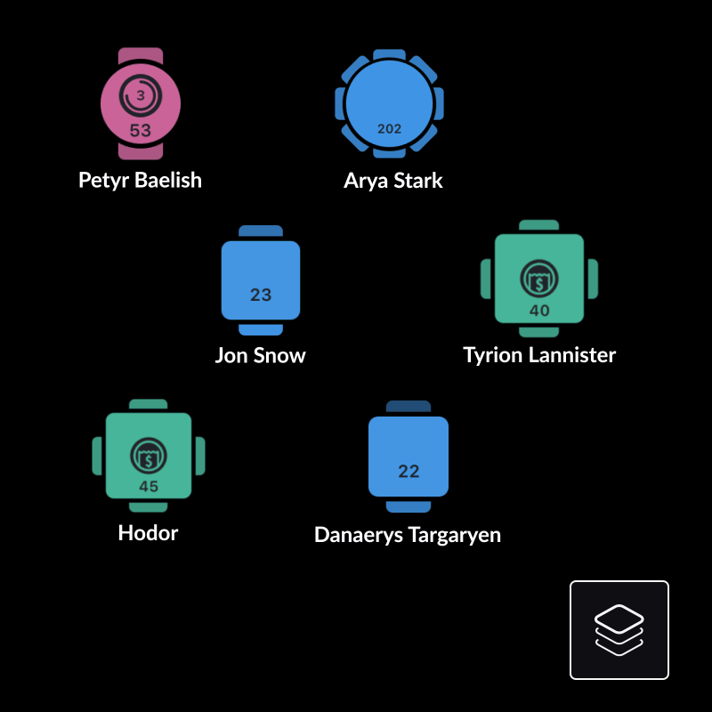
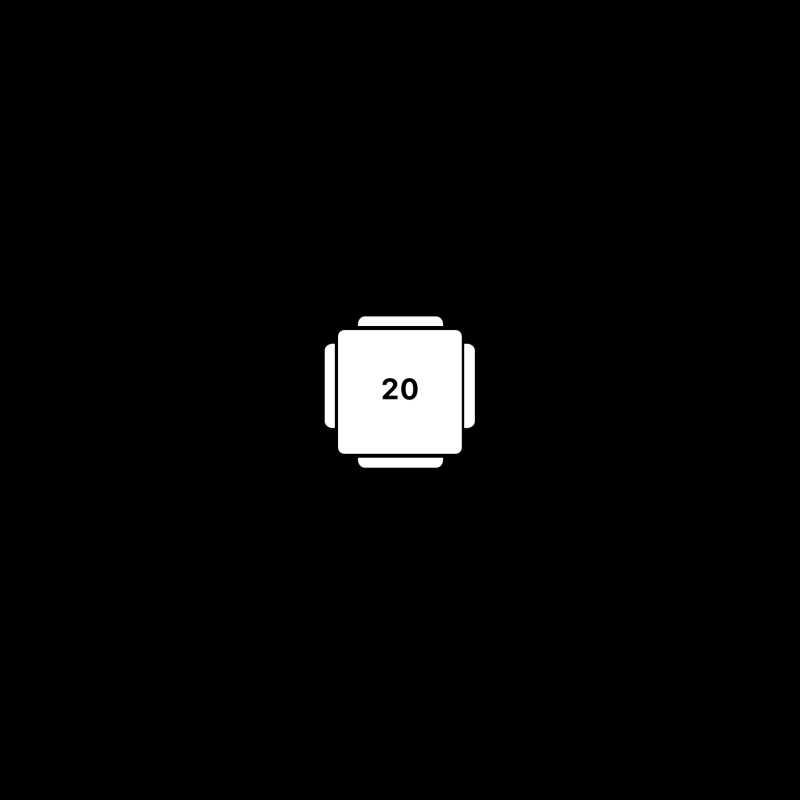
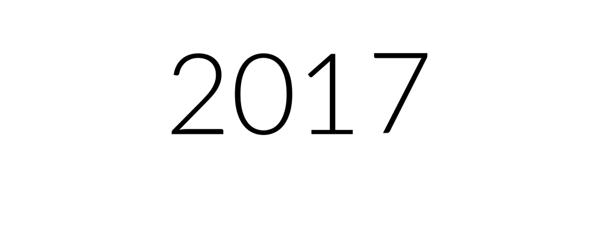

Reservation Management I joined SevenRooms as a product design intern in the summer of 2016 and worked on several projects throughout the following year. During my internship, I gained valuable insights into both design and the industry. As a food enthusiast, I'm proud to contribute to the hospitality sector by applying a product design mindset.
Timeline
- June 2016 - May 2017
My role
- Product Design Intern
Team
- Product Manager, Engineering, Customer Success
Floorplan
I worked on designing floorplans that allowed
restaurant staff to efficiently manage guests and reservations. This innovative approach provided an
interactive way to view seating arrangements and relevant information in a unified, easy-to-navigate
format.

Booking Widgets
I collaborated with my design lead to create the
workflow for the original booking widgets on the mobile platform. Customers could use a link provided by
restaurants and bars to make reservations. We presented the demo to several business owners, gathering
feedback to iterate and refine the design before delivering it to all users.



Booking Widget Customization
The booking widget serves as the final
customer-facing experience and is designed as a flexible framework. Restaurant owners can access the
mission control dashboard to customize the booking widget according to their needs. I led the design of
the business owner experience on the web platform.



Motion-Driven Handoff
I used motion while working on direct message and content flow to effectively convey interaction behavior, improving alignment between designers and engineers.
Motion Design for App Onboarding
I created motion design to streamline onboarding and
highlight core app functionality.


Motion Design for Marketing
I created motion designs within the product to
visually signal to users when certain actions were completed. These animations also served to enhance
customer communication, providing a smoother and more intuitive experience.
